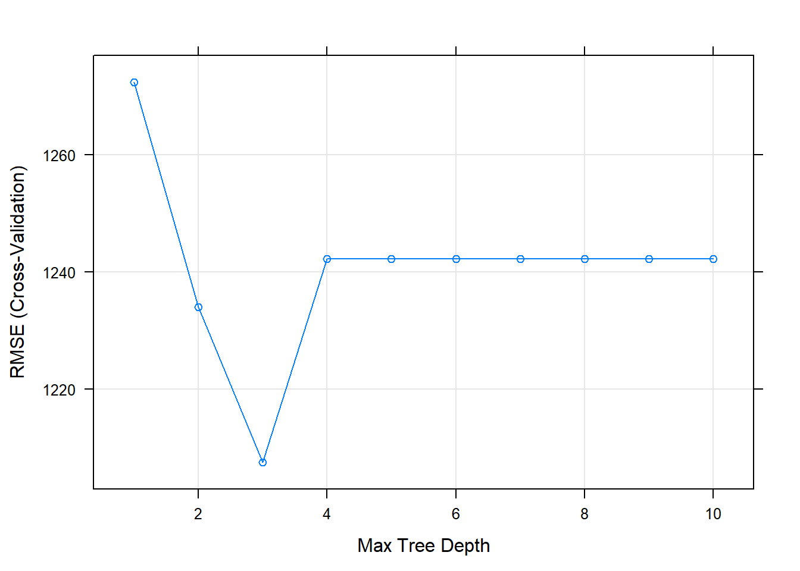

8 Un paquete para dominarlos a todos
En los últimos dos capítulos del libro nos hemos introdujido en dos de las técnicas más difundidas en la estadística y en el aprendizaje automático. En este capítulo vamos a introducirnos a un paquete que nos permite estimar estos y otros modelos de una manera unificada y ahorrándonos los ciclos de programación que usamos, por ejemplo, en el capítulo 5 para optimizar los parámetros del Árbol de Decisión.
8.1 Classification And Regression Training (CARET)
Como ya se adelantó, CARET es una librería que brinda varias funcionalidades útiles para crear modelos predictivos. Esas funcionalidades incluyen transformaciones de datos, visualizaciones y distintos métodos de análisis de capacidad predictiva. Para un análisis exhaustivo de las funcionalidades de este paquete les recomiendo visitar la muy buena página de ayuda del paquete: https://topepo.github.io/caret/
En este capítulo haremos especial énfasis en la forma en la cual podemos usar distintos algoritmos de aprendizaje automático y qué estrategias tenemos para optimizar los parámetros de tal manera que maximicen su performance sobre nuevos datos y no caer ni en el underfitting ni en el overfitting.
8.2 Entrenando un árbol de decisión
Con el objetivo de aprender a crear distintos algoritmos de aprendizaje automático, primero vamos a replicar en caret lo que hicimos en el capítulo 5 con el dataset de trabajadores independientes.
load(file=url("https://github.com/martintinch0/CienciaDeDatosParaCuriosos/raw/master/data/independientes.RData"))El data frame independientes cuenta con 2.783 observaciones de trabajadores independientes. La variable REGISTRADO indica si ese trabajador se encuentra registrado o no, mientras que el resto de las variables potencialmente podrían ser útiles para clasifiar a un trabajador independiente como registrado o no.
Usaremos nuevamente la implementación de árboles de decisión y también partiremos a nuestros datos en un 70% que será el dataset de entrenamiento y un 30% que se convertirá en el dataset de testing.
require(caret)
require(tidyverse)
set.seed(4) # Esta línea solo intenta que tengamos los mismos números aleatorios
trainingIndexes <- createDataPartition(y = independientes$REGISTRADO,
p = 0.7,
list = FALSE)La función createDataPartition() de CARET nos devuelve un conjunto de índices tomados al azar en base a algunos parámetros tales como la proporción (parámetro p) que queremos que tenga de tamaño nuestro dataset. Si prestan atención a trainingIndexes se darán cuenta que la función devuelve una matriz de una sola columna con 1949 números, que son los índices de nuestro dataset de entrenamiento: 1949 es exactamente el 70% de 2783, la cantidad de filas de nuestro dataset.
Con estos índices ya podemos crear nuestro dataset de training y testing:
training <- independientes[ trainingIndexes,]
testing <- independientes[-trainingIndexes,]Una vez que tenemos un dataset de entrenamiento y validación (o testing) estamos en condiciones de entrenar un modelo ¿Cómo se hace con caret? con la función train(). Pero a esta función debemos pasarle algunos controles, como por ejemplo qué parámetros tunear y cómo hacerlo. Para la primera de estas preguntas, qué parámetros tunear, debemos pasar una matriz que tenga en las columnas los parámetros a tunear y en las filas los valores que queremos probar. Aunque esto suena difícil, si usamos la función expand.grid() se hace mucho más fácil.
No todos los parámetros de todos los modelos de CARET pueden ser “afinados”. En https://topepo.github.io/caret/available-models.html podemos ver qué modelos pueden usarse en CARET y cuáles son los parámetros que podemos optimizar. Para nuestor modelo C5.0, estos son trials, model y winnow. La documentación de C5.0 en R explica en detalle qué hace cada uno de estos modelos, a modo de resumen:
Trials: Define la cantidad de boosting que tiene nuestro árbol. Boosting es tan solo un método para combinar diversos clasificadores (más de un árbol) para poder mejorar la performance de nuestro modelo. En el ejemplo del capítulo 5 lo dejamos en 1 (teníamos solo un árbol), aquí probaremos que pasa si aumentamos este valor Model: indicamos si queremos un modelo de árboles o de reglas, dejaremos siempre árboles. Winnow: Este parámetro nos dice si queremos que el árbol elija descartar algunas variables para mejorar la capacidad predictiva del modelo
Creemos la grilla con los valores que queremos probar:
grilla <- expand.grid(trials=c(1:4),
winnow=c(TRUE,FALSE),
model="tree")
glimpse(grilla)## Rows: 8
## Columns: 3
## $ trials <int> 1, 2, 3, 4, 1, 2, 3, 4
## $ winnow <lgl> TRUE, TRUE, TRUE, TRUE, FALSE, FALSE, FALSE, FALSE
## $ model <fct> tree, tree, tree, tree, tree, tree, tree, treeBien, ahora debemos decirle cómo queremos que vaya evaluando a los modelos, eso lo podemos hacer con la función trainControl(). Podemos customizar varios parámetros, por ejemplo si queremos hacer cross validation o no, y la cantidad de bins que queremos que haga. Vamos a crear las instrucciones para exactamente esto:
trainingInstructions <- trainControl(method = "cv",
number = 3)En method escribimos “cv”, por Cross Validiation, mientras que en number incluímos la cantidad de conjuntos en los que queremos que divida a nuestro dataset de training. Ahora estamos en condiciones de entrenar nuestro primer modelo con Caret:
CaretC50 <- train(
y=training %>% select(REGISTRADO) %>% unlist(),
x = training %>% select(-REGISTRADO),
method = "C5.0",
metric = "Accuracy",
tuneGrid = grilla,
trControl = trainingInstructions
)Veamos que nos devuelve cuando usamos summary():
summary(CaretC50)Debería haber devuelto algo muy similar a lo que veíamos con el paquete C5.0. Esto tiene lógica porque lo que devuelve Caret es el modelo que mejor medida de accuracy tuvo, en el mismo “formato” que devolvería el paquete que tiene el código con el que se entrena el modelo, en este caso C5.0 ¿Y cómo sabemos cual combinación de nuestra grilla es la que mostró la mejor performance?
CaretC50## C5.0
##
## 1949 samples
## 5 predictor
## 2 classes: 'No_registrado', 'Registrado'
##
## No pre-processing
## Resampling: Cross-Validated (3 fold)
## Summary of sample sizes: 1300, 1299, 1299
## Resampling results across tuning parameters:
##
## winnow trials Accuracy Kappa
## FALSE 1 0.7927123 0.4621135
## FALSE 2 0.7901466 0.4543004
## FALSE 3 0.7937387 0.4852959
## FALSE 4 0.7942515 0.4631932
## TRUE 1 0.7922002 0.4572151
## TRUE 2 0.7916874 0.4584683
## TRUE 3 0.7957923 0.4912082
## TRUE 4 0.8019478 0.4844389
##
## Tuning parameter 'model' was held constant at a value of tree
## Accuracy was used to select the optimal model using the largest value.
## The final values used for the model were trials = 4, model = tree and winnow = TRUE.La salida print() de nuestro objeto de Caret nos da información sobre la performance de cada uno de los parámetros que probamos. Dependiendo del azar, les aparecerá uno como el mejor, probablemente por una diferencia muy pequeña en la accuracy. finalmente, en la última linea de la salida les dice cual fue el que se eligió y por qué criterio.
Con nuestro modelo ya estimado y entrenado podemos predecir, como siempre, sobre otro dataset. En este caso, el que tenemos de validación o testing:
testing <- testing %>%
mutate(prediccion=predict(CaretC50,newdata = testing))La función que tenemos que usar para predecir en base a un modelo es siempre la misma: predict(). Para usarlo con datos nuevos que no sean con los que se entrenó el modelo, debemos pasarlo en “newdata”, pero este data frame debe tener variables con los mismos nombres y, en caso de no ser númerica, tomar los mismos valores ya que sobre esos aprendió el modelo. Calculemos la accuracy sobre los datos de validación:
sum(testing$REGISTRADO==testing$prediccion)/nrow(testing)*100## [1] 79.016798.3 Entrenando un árbol de regresión
En Caret es realmente simple entrenar distintos modelos. Solo tenemos que conocer si está disponible dentro del paquete, saber cómo debemos llamarlo en el parámetro method dentro de train y conocer también cuáles parámetros podemos optimizar. Probemos esta posibilidad de cambiar de modelos usando el mismo dataset de inmuebles de Properati que usamos en el capítulo anterior. En el siguiente código de R voy a hacer todos los pasos de Data Wrangling que se describen en ese capítulo
avisosInmuebles <-read.table(file = url("https://github.com/martintinch0/CienciaDeDatosParaCuriosos/raw/master/data/datosProperati.csv"),
sep=';',header = TRUE,stringsAsFactors = FALSE)
avisosInmuebles <- avisosInmuebles %>%
filter(property_type %in% c("Casa","Departamento","PH"))
avisosInmuebles <- avisosInmuebles %>%
mutate(ambientes=str_extract(pattern = "(?i)\\d.amb", string= title)) %>%
mutate(ambientes=ifelse(is.na(ambientes),
str_extract(pattern = "(?i)\\d.amb", string=description), ambientes)) %>%
mutate(ambientes=as.numeric(str_extract(pattern='\\d',ambientes))) %>%
mutate(ambientes=ifelse(ambientes == 0,NA,ambientes))
avisosInmuebles <- avisosInmuebles %>%
mutate(rooms = ifelse(is.na(rooms), ambientes, rooms))
avisosInmuebles <- avisosInmuebles %>%
select(-created_on,-currency,-operation_type,-ambientes) %>%
filter(complete.cases(.))
avisosInmuebles <- avisosInmuebles %>%
mutate(USDm2=price/surface_total)Si se fijan en https://topepo.github.io/caret/available-models.html van a ver que existen algunas implementaciones distintas de rpart. Usaremos la que pide usar el método ‘rpart2’ porque nos deja mejorar el parámetro maxdepth, que determina que tan “profundo” puede ser el árbol resultante. Como solo es una variable, usar expand.grid() no tiene mucho sentido, pero para acostumbrar a trabajar de una manera ordenada vamos a usarlo igual:
grilla <- expand.grid(maxdepth=c(1:10))También vamos a cambiar levemente los controles de entrenamiento y elegir que divida a nuetro dataset en 5 partes para el cross validation:
trainingInstructions <- trainControl(method = "cv",
number = 5)Ya estamos en condiciones para entrenar al modelo de rpart:
rpartModel <- train(
y=avisosInmuebles %>% select(USDm2) %>% unlist(),
x = avisosInmuebles %>% select(rooms,BARRIO, bathrooms, property_type, surface_covered,
surface_total),
method = "rpart2",
metric = "RMSE",
tuneGrid = grilla,
trControl = trainingInstructions
)¿Cuál fue el modelo que eligió? Puede variar según los números aleatorios que toma para segmentar a los conjuntos sobre los que se entrena y valida, pero nuevamente pueden detectarlo usando el método print()
print(rpartModel) # Es lo mismo que poner solo "rpartModel"## CART
##
## 47752 samples
## 6 predictor
##
## No pre-processing
## Resampling: Cross-Validated (5 fold)
## Summary of sample sizes: 38202, 38202, 38201, 38201, 38202
## Resampling results across tuning parameters:
##
## maxdepth RMSE Rsquared MAE
## 1 1272.367 0.1859278 634.2621
## 2 1234.055 0.2399316 609.0526
## 3 1207.551 0.2760798 574.3846
## 4 1242.231 0.2391191 559.7036
## 5 1242.231 0.2391191 559.7036
## 6 1242.231 0.2391191 559.7036
## 7 1242.231 0.2391191 559.7036
## 8 1242.231 0.2391191 559.7036
## 9 1242.231 0.2391191 559.7036
## 10 1242.231 0.2391191 559.7036
##
## RMSE was used to select the optimal model using the smallest value.
## The final value used for the model was maxdepth = 3.También podríamos intentar verlo gráficamente (dónde minimiza RMSE):
plot(rpartModel)
8.4 Ejercicio
Usando los datos de avisosInmuebles ya procesados, hagan el siguiente trabajo de Data Wrangling:
avisosInmuebles <- avisosInmuebles %>%
mutate(gimnasio = ifelse(grepl(pattern = "gym|gimn",x = description) |
grepl(pattern = "gym|gimn", x = title), TRUE, FALSE),
cochera = ifelse(grepl(pattern = "coch|garage",x = description) |
grepl(pattern = "coch|garage", x = title), TRUE, FALSE),
pileta = ifelse(grepl(pattern = "pileta|piscina",x = description) |
grepl(pattern = "pileta|piscina", x = title), TRUE, FALSE))Lo que hace el código es crear tres variables (gimnasio, cochera, pileta) que intenta identificar la presencia de esas tres características de los inmuebles en cada una de las publicaciones ¿Pueden explicarlo en palabras cómo lo hace? Tengan en cuenta que la función grepl() devuelve una lista de TRUE/FALSE dependiendo de si se encuentra lo que está dentro de “pattern” en el vector que se provee en el parámetro “x”.
Independientemente de esa interpretación, usando Caret entrenen un árbol de regresión con rpart2 y con los mismos parámetros que están en el cuerpo del capítulo ¿Cuánto cambió el RMSE con la inclusión de las tres variables que creamos? ¿Sugiere un parámetro de maxdepth distinto al que sugería cuando no incorporamos estas variables?